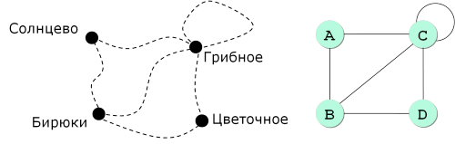
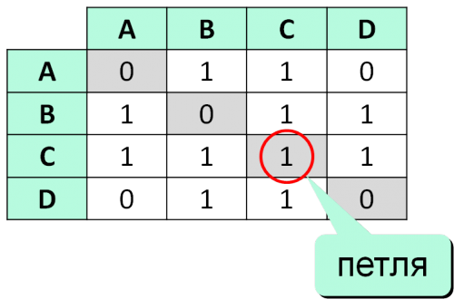
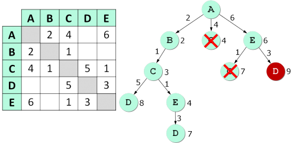
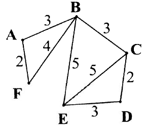
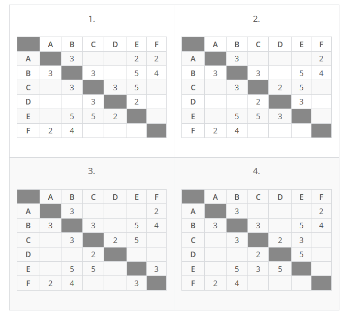

Информатика ОГЭ:
Разбор №4 задания
Графы
Граф – это набор вершин и связей между ними, называющихся рёбрами:
Матрица и список смежности
Поиск кратчайшего пути (перебор)
Разберем задачу:
Между населёнными пунктами A, B, C, D, E, F построены дороги, протяжённость которых (в километрах) приведена в таблице:
| A | B | C | D | E | F | |
|---|---|---|---|---|---|---|
| A | 5 | 8 | 4 | 1 | ||
| B | 5 | 3 | 3 | 4 | ||
| C | 8 | 3 | 2 | 15 | ||
| D | 4 | 2 | 4 | 12 | ||
| E | 1 | 3 | 4 | 7 | ||
| F | 4 | 15 | 12 | 7 |
Определите длину кратчайшего пути между пунктами A и F, проходящего через пункт C. Передвигаться можно только по дорогам, протяжённость которых указана в таблице. Каждый пункт можно посетить только один раз.
- Найдём все варианты маршрутов из A в F, проходящих через пункт С, и выберем самый короткий.
- Пройдемся по таблице построчно слева-направо сверху-вниз:
A—B—C—D—E--F: длина маршрута 25 км.
A—B—C—D--F: длина маршрута 29 км.
A—B—C--F: длина маршрута 28 км
.пропустим B:
пропустим B:
A—C—D—E--F: длина маршрута 20 км.
пропустим и D:
A—C—E--F: длина маршрута 16 км.
пропустим и E:
A—C—D--F: длина маршрута 24 км.
A—C--F: длина маршрута 23 км.
поменяем следование маршрута, исключая пункты с большим числом км:
A—C—B--F: длина маршрута 15 км.
A—D—С—B--F: длина маршрута 13 км.
- Самый короткий путь: A—D—С—B--F. Длина маршрута 13 км.
Ответ: 13
Вторая задача:
На схеме приведена стоимость перевозок между соседними железнодорожными станциями, укажите таблицу, соответствующую схеме:
 Решение:
- Необходимо рассмотреть каждую таблицу и подсчитать количество пересечений для каждой строки, т.е. для каждой ж.д. станции. В скобках будем указывать соответствующую данной станции стоимость:
1 таблица:A: B(3), E(2), F(2)
Здесь уже можно остановиться, т.к. для станции A по схеме два ребра у вершины А,
а по таблице уже три значения
- 2 таблица:
A: B(3), F(2)
B: A(3), C(3), E(5), F(4)
C: B(3), D(2), E(5)
D: C(2), E(3)
F: A(2), B(4)
zДанные на схеме полностью совпадают с табличными!
- Таблица 2 полностью соответствует схеме.
Ответ: 2